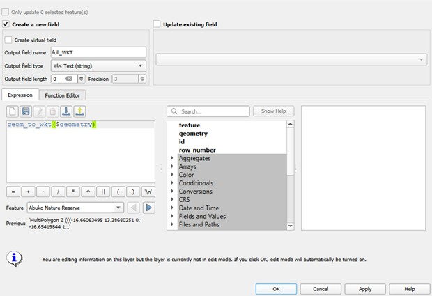

Fixing Truncated WKT Values in QGIS#
One of the most important fields in our metadata schema is “WKT” (Well-Known Text). This field allows spatial data to be represented consistently across different GIS platforms and mapping systems, including Arches.
A common issue encountered is that WKT values for multipolygons appear clipped when copied from QGIS into spreadsheets. This occurs because, by default, QGIS only displays the first 254 characters of a text field in the attribute table, even if the actual WKT value is longer.
For example, a complete WKT value for a multipolygon starts and ends with three parentheses and follows a structure like this:
MultiPolygon Z (((x1 y1 z1, x2 y2 z2, ...)))
However, in a truncated value (due to the 254-character display limit), you may see something like:
MultiPolygon Z (((-16.38722637 13.332306 0, -16.38861251 13.33678417 0, -16.38620531 13.33655351 0, -16.38485019 13.33670663 0, -16.38319154 13.33698423 0, -16.38176182 13.33716558 0, -16.3806017 13.33729377 0, -16.37954492 13.33744538 0, -16.37914255 13...
This indicates that the full geometry has been cut off and is not displayed completely in the attribute table. To display and export the complete WKT value, you need to create a new field using the Field Calculator in QGIS. Follow the steps below:
1. Right-click the layer and open the Attribute Table.
2. Open the Field Calculator.
3. In the “Output field name” box, enter a name such as “full_WKT” (since we are extracting the complete string).
4. Set the “Output field type” to “Text (string)”.
5. Set the “Output field length” to 0, ensuring there is no limit on string length.
6. In the “Expression” box, enter the following expression:
geom_to_wkt($geometry)
7. Click Apply and then OK.
You can also refer to the Field Calculator screenshot below, which shows the same configuration and fields used in this example.

After completing these steps, reopen the attribute table. The new field “full_WKT” will display the complete WKT values without truncation.